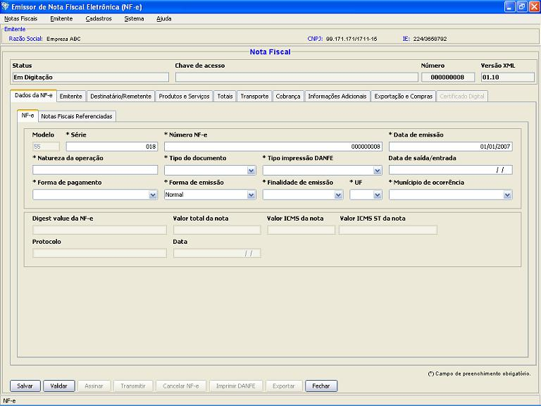
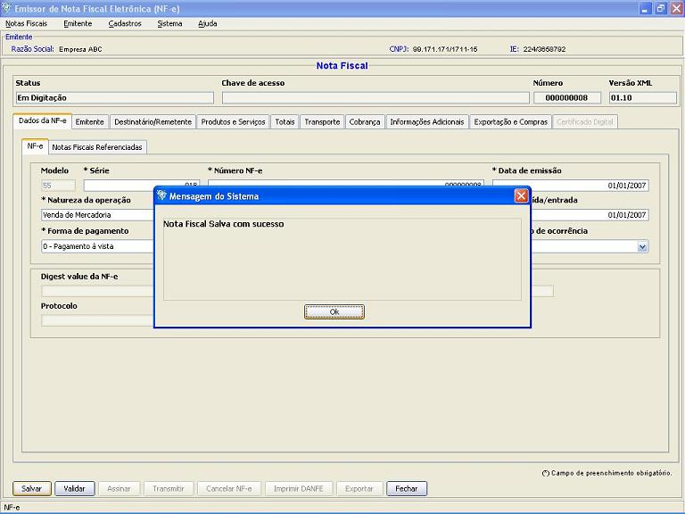

Software Emissor NF-e
Gerando uma Nova NF-e
Opção de gerar uma nova Nota Fiscal eletrônica do Emitente atual.
Pré-condição: Um emitente
deverá estar previamente iniciado.
- Acessar o menu: Notais Fiscais
-> Emitir Nova Nota
- Na tela de Inclusão de uma nova Nota Fiscal eletrônica, preencher
corretamente os campos
da NF-e
- A qualquer momento, o usuário poderá selecionar a opção Salvar
para armazenar as informações da NF-e, sem precisar
realizar o preenchimento de todos os campos obrigatórios. (*)
(*)
Observação: Os campos mínimos a serem
preenchidos para selecionar a opção Salvar
são: a Série, o Número da NF-e e a Data de
Emissão da nota.
Preencher os campos da NF-e corretamente:

Ao clicar em Salvar, a NF-e será armazenada no Software Emissor para posterior edição:
